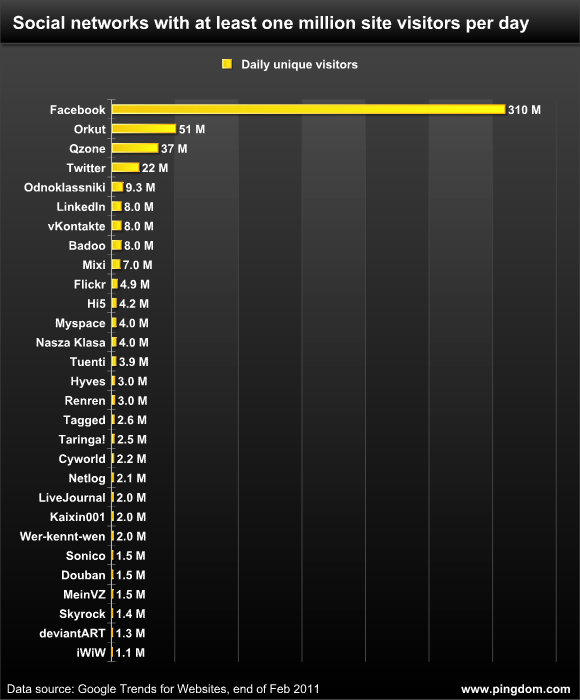

Análise
O comportamento das redes sociais surge como importante fato na Sociologia Moderna. Tal conceito fora estabelecido como um modelo novo dentre as Ciências Sociais no século XX, sendo aplicado e desenvolvido em virtude de diversas disciplinas como a antropologia, a biologia, estudos de comunicação, a economia, a geografia, ciências de informação, psicologia social, e acima de tudo, da prestação social.
Essa ideia propagada há cerca de um século atrás, é usada para designar um conjunto de relações complexas entre membros pertencentes a um sistema social, dado a distintas dimensões, a partir da interpessoal à internacional.
As estruturas das Redes Sociais são caracterizadas essencialmente pelas relações dos atores sociais. Tais relações expõem um fenômeno no qual se aponta a existência de firmes laços e fracos também, e dos interstícios onde estão atores não realizam comunicação entre si, caso não haja intermédio de outrem.
|  |
Clique sobre a imagem ao lado para verificar as estatísticas da distribuição de uso das redes sociais pelo mundo. Observe a quantidade de usuários no Facebook. |
Referências Bibliográficas:
|Anterior|